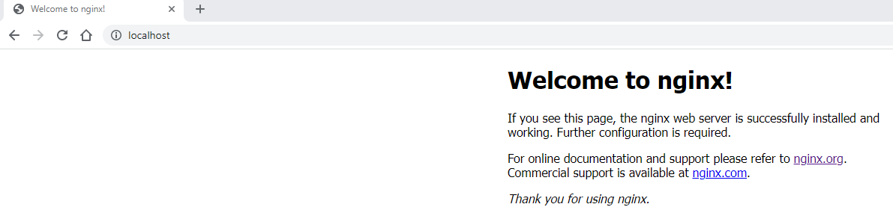
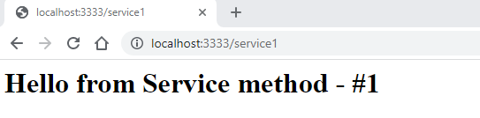
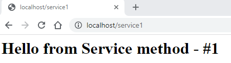

Run the App
We will now run and test the app
Start the app
Use command docker compose up to start the app from the project root directory. Note that 2 containers are created :
- nginx-docker-web-1
- nginx-docker-nginx-1
PS C:\Users\aniru\workspace\github\nginx-docker> docker compose up
[+] Running 2/0
- Container nginx-docker-web-1 Created 0.0s
- Container nginx-docker-nginx-1 Created 0.0s
Attaching to nginx-docker-nginx-1, nginx-docker-web-1
nginx-docker-web-1 | * Serving Flask app 'helloworld'
nginx-docker-web-1 | * Debug mode: off
nginx-docker-web-1 | WARNING: This is a development server. Do not use it in a production deployment. Use a production WSGI server instead.
nginx-docker-web-1 | * Running on all addresses (0.0.0.0)
nginx-docker-web-1 | * Running on http://127.0.0.1:3333
nginx-docker-web-1 | * Running on http://172.29.0.2:3333
nginx-docker-nginx-1 | 2023/01/12 16:12:04 [notice] 1#1: built by gcc 10.2.1 20210110 (Debian 10.2.1-6)
Now check the run-time status of the containers
PS C:\Users\aniru\workspace\github\nginx-docker> docker container ls
CONTAINER ID IMAGE COMMAND CREATED STATUS PORTS NAMES
a4c0c31462c9 nginx-docker-nginx "/docker-entrypoint.…" 29 hours ago Up 2 hours 0.0.0.0:80->80/tcp nginx-docker-nginx-1
368b5d540cc1 nginx-docker-web "python ./helloworld…" 29 hours ago Up 2 hours 0.0.0.0:3333->3333/tcp nginx-docker-web-1
Test the application
-
Let's check the nginx localhost running on port 80 
-
Also, let's check the web-app running on port 3333 
-
Now let's see if Nginx forwards our service1 request
